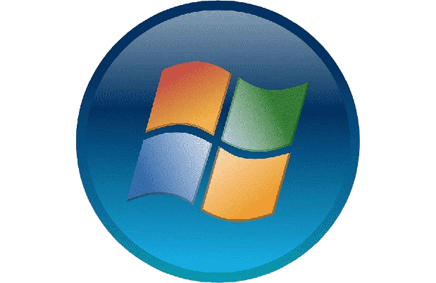
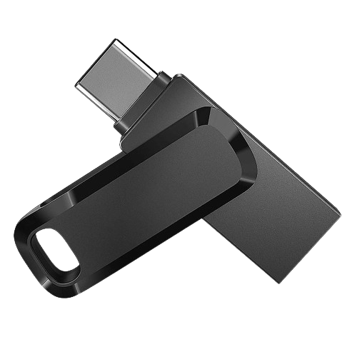
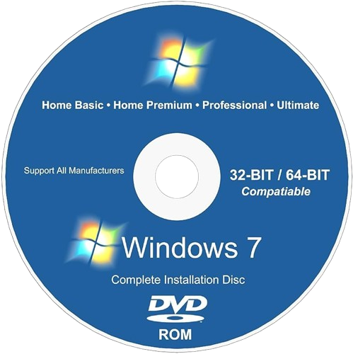
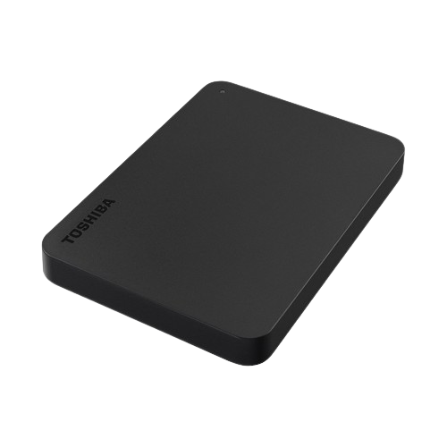
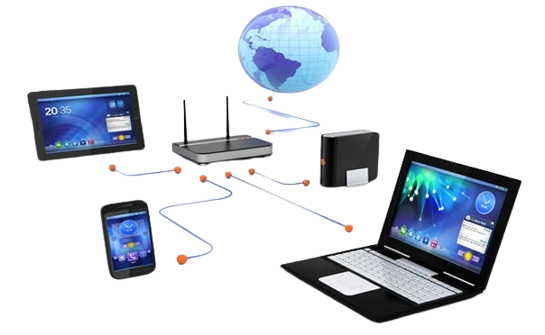

Exigências do sistema operativo quanto às capacidades do equipamento
Exigências do sistema operativo quanto às capacidades do equipamento.

Windows:
Processador: Processador de 1 GHz ou mais rápido.
RAM: 1 GB para versões de 32 bits ou 2 GB para versões de 64 bits.
Espaço em Disco: Pelo menos 32 GB de espaço livre.
Placa Gráfica: Resolução de tela de 800 x 600 ou superior; placa gráfica DirectX 9 ou posterior.
macOS:
Modelos de Mac suportados: MacBook (início de 2015 ou mais recente), MacBook Air (meados de 2012 ou mais recente), MacBook Pro (meados de 2012 ou mais recente), Mac mini (final de 2012 ou mais recente), iMac (final de 2012 ou mais recente), iMac Pro (todos os modelos), Mac Pro (final de 2013 ou mais recente).
RAM: Pelo menos 4 GB de memória.
Espaço em Disco: Pelo menos 12,5 GB de espaço livre.
Linux
Processador: Processador de 2 GHz dual-core.
RAM: 4 GB de memória do sistema.
Espaço em Disco: 25 GB de espaço disponível no disco rígido.
Instalação do SO a partir de periféricos
A instalação de um sistema operacional a partir de periféricos pode ser feita de várias maneiras, dependendo do sistema operacional específico e do tipo de periférico que você está usando.

Instalação a partir de uma unidade flash USB:
Baixe a imagem ISO do sistema operacional desejado.
Use uma ferramenta como Rufus (para Windows), dd (para Linux), ou Etcher (para macOS, Windows, e Linux) para criar um dispositivo inicializável USB a partir da imagem ISO.
Conecte o USB ao computador que você deseja instalar o sistema operacional.
Inicie o computador a partir do USB (certifique-se de que a ordem de inicialização no BIOS/UEFI está configurada corretamente).
Siga as instruções na tela para instalar o sistema operacional.

Instalação a partir de um DVD:
Grave a imagem ISO em um DVD usando um software de gravação de discos.
Insira o DVD no drive óptico do computador.
Inicie o computador a partir do DVD.
Prossiga com as instruções na tela para instalar o sistema operacional.

Instalação a partir de um disco rígido externo:
Armazene a imagem ISO em um disco rígido externo.
Use um utilitário de inicialização USB ou configure o BIOS/UEFI para inicializar a partir do disco rígido externo.
Siga as instruções na tela para iniciar o processo de instalação.
Prossiga com as instruções na tela para instalar o sistema operacional.

Instalação a partir de uma rede (PXE boot):
Configure um servidor PXE em sua rede.
Conecte o computador à rede e configure o BIOS/UEFI para inicializar a partir da rede.
O computador baixará o ambiente de instalação através da rede e iniciará o processo de instalação.
Selecção de opções na instalação
A seleção de opções durante a instalação de um sistema operacional pode variar dependendo do sistema operacional específico.
Idioma e Região:
Escolha o idioma no qual você deseja instalar o sistema operacional.
Selecione a região ou fuso horário apropriado.
Tipo de Teclado:
Escolha o layout do teclado que você usará.
Particionamento de Disco:
Selecione o disco rígido ou a unidade onde o sistema operacional será instalado.
Configure as partições do disco, como criar, excluir ou redimensionar partições.
Escolha o sistema de arquivos a ser usado nas partições.
Formatação de Disco:
Escolha se deseja formatar o disco antes da instalação.
A formatação é geralmente necessária para garantir que o disco esteja pronto para receber o novo sistema operacional.
Autenticação e Senhas:
Insira informações de autenticação, como nome de usuário e senha.
Alguns sistemas operacionais permitem configurar senhas para o usuário root/administrador.
Seleção de Componentes ou Pacotes (Opcional):
Alguns sistemas operacionais permitem que você escolha componentes específicos ou pacotes de software
durante a instalação.
Isso permite personalizar a instalação com base nas suas necessidades.
Configurações de Rede:
Configure as configurações de rede, como endereço IP, gateway e DNS.
Alguns sistemas operacionais permitem configurar a rede durante a instalação, enquanto outros podem exigir configurações pós-instalação.
Configurações de Grub (para sistemas Linux):
Configure o GRUB (Gerenciador de Inicialização do GNU) para permitir a inicialização múltipla se houver vários sistemas operacionais no mesmo computador.
Atualizações e Pacotes Adicionais (Opcional):
Alguns sistemas operacionais oferecem a opção de baixar e instalar atualizações durante a instalação.
Resumo ou Revisão:
Antes de iniciar o processo de instalação, alguns sistemas operacionais exibem um resumo das opções selecionadas para revisão.
Conclusão da Instalação:
Após a configuração de todas as opções, a instalação é iniciada.
Aguarde até que o processo de instalação seja concluído.
Definição do plano de configuração de periféricos
Identificação de Periféricos:
Liste todos os periféricos que serão conectados ao sistema.
Certifique-se de que o sistema operacional suporta esses periféricos e que existem drivers disponíveis.
Compatibilidade de Hardware:
Verifique se os periféricos são compatíveis com o hardware do sistema. Isso inclui a verificação de interfaces de conexão (USB, Bluetooth, etc.) e requisitos de energia.
Instalação de Drivers:
Certifique-se de ter os drivers mais recentes para cada periférico.
Drivers podem ser instalados a partir de discos incluídos, downloads do fabricante ou através do próprio sistema operacional.
Conexão Física:
Conecte fisicamente os periféricos ao sistema, seguindo as instruções do fabricante.
Verifique se os cabos e conexões estão em boas condições.
Configuração de Dispositivos de Entrada:
Configure teclados, mouses e outros dispositivos de entrada de acordo com as preferências do usuário.
Personalize configurações como sensibilidade do mouse, layout do teclado, etc.
Configuração de Dispositivos de Saída:
Ajuste configurações de monitores, impressoras e outros dispositivos de saída conforme necessário.
Escolha resoluções de tela apropriadas, configurações de cor, etc.
Configuração de Rede para Dispositivos Conectados:
Se os periféricos são dispositivos de rede, como impressoras de rede, configure as configurações de rede, como endereço IP, gateway, etc.
Atualizações de Firmware:
Verifique se há atualizações de firmware disponíveis para os periféricos e, se necessário, atualize-os para garantir o funcionamento correto.
Testes e Verificação:
Realize testes para garantir que todos os periféricos estejam funcionando corretamente.
Verifique se há conflitos de recursos ou problemas de driver.
Documentação:
Mantenha registros de configurações e drivers utilizados para cada periférico.
Documente qualquer configuração personalizada ou ajustes feitos.